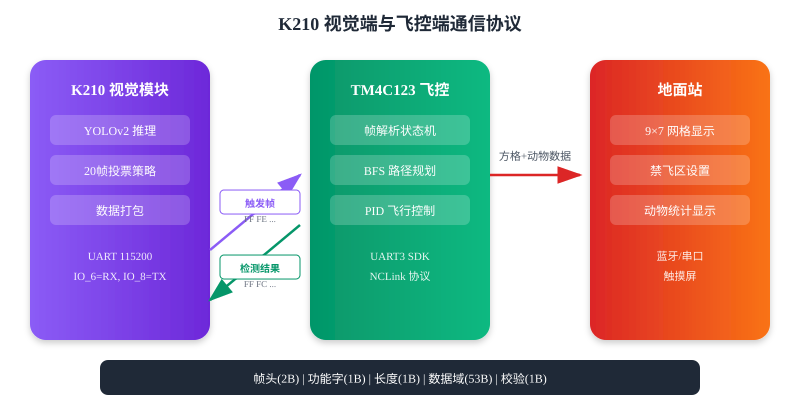
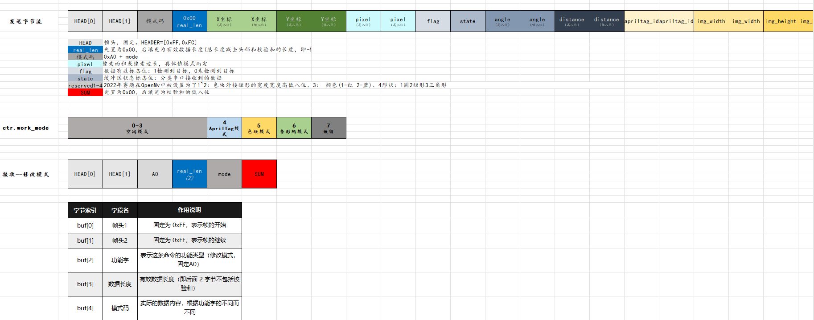
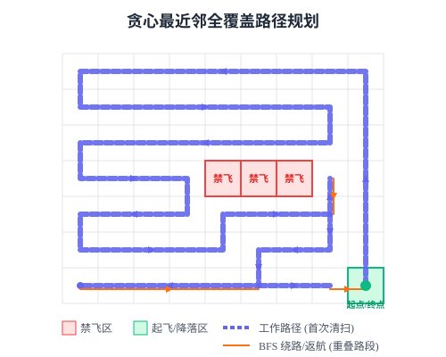
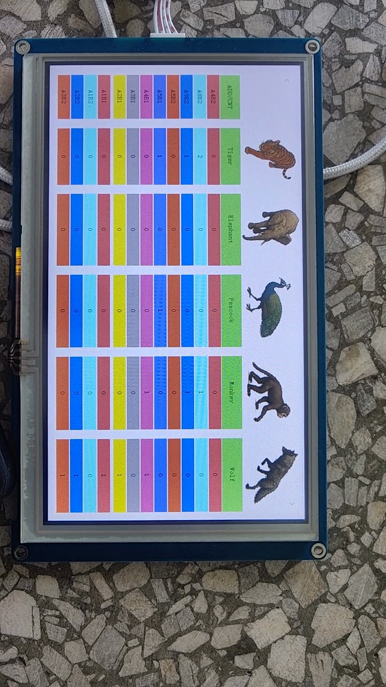

无人机野生动物巡查系统
2025 全国大学生电子设计竞赛 H 题 · 视觉识别 + 路径规划 + 自主飞行

赛题背景
2025 年全国大学生电子设计竞赛 H 题要求设计一套野生动物巡查系统，使用多旋翼自主飞行无人机巡查 450cm×350cm 区域（分成 63 个 50cm×50cm 方格），识别、统计区域内野生动物类型（象、虎、狼、猴、孔雀等）、所在位置及各种动物的数量。
核心要求
- 巡查前在地面站设置3 个禁飞区，规划覆盖所有非禁飞区方格的航线
- 无人机从红色起飞区起飞，在 120±10cm 高度按航线巡查，500 秒内完成
- 发现动物时识别种类及数量，将方格代码、动物名称及数量发送到地面站
- 发挥部分：用机载激光笔光斑照射动物体态轮廓
系统硬件组成
整套系统采用多传感器融合架构，涵盖飞控、视觉、导航、通信四大模块：
| 模块 | 型号 | 作用 |
|---|---|---|
| 飞控主芯片 | TI TM4C123GH6PM | ARM Cortex-M4F, 80MHz，姿态解算、PID 控制、任务调度 |
| 机载计算机 | 树莓派 4B | ROS 建图 + SLAM 定位 + OpenCV 图像处理 |
| 视觉模块 | K210 (MaixPy) | YOLOv2 目标检测，5 类动物识别（象、虎、狼、猴、孔雀） |
| 激光雷达 | 乐动 DTOF 雷达感应器 | SLAM 建图与定位，提供全局位置信息 |
| IMU | ICM20689 | 三轴陀螺仪 + 三轴加速度计 (1000Hz 采样) |
| 气压计 | SPL06 | 气压高度测量 |
| 对地测距 | TOFSense / VL53L1X | 精确对地高度，保证 120cm 巡查高度 |
| 光流 | LC306 | 水平速度估计，辅助位置闭环 |
| 地面站 | 触摸屏 + 蓝牙 | 禁飞区设置、动物统计显示、参数调试 |
我的工作板块
在整个项目中，我主要负责软件部分的开发，包括视觉端通信设计、模型训练部署、以及路径规划算法三大模块。
3个
核心工作模块
70%+
YOLO 识别准确率
60格
全覆盖路径规划
一、视觉端 K210 与飞控端字节流通信设计
设计了 K210 视觉模块与 TM4C123 飞控之间的二进制通信协议，实现可靠的双向数据传输。飞控发送触发帧通知 K210 开始检测，K210 完成检测后发送结果帧回传数据。

Python - K210 端数据打包 (K210main3.0.py)
def package_data(mode_val=MODE_CONST):
"""FF FC | (0xA0+mode) | len | payload | checksum"""
data = [
0xFF, 0xFC, # 帧头
(0xA0 + (mode_val & 0xFF)) & 0xFF, # 功能字
0x00, # 长度占位
(target.x >> 8) & 0xFF, target.x & 0xFF, # 目标X
(target.y >> 8) & 0xFF, target.y & 0xFF, # 目标Y
(target.pixel >> 8) & 0xFF, target.pixel & 0xFF, # 面积
target.flag & 0xFF, # 检测标志
target.state & 0xFF, # 保留
(target.angle >> 8) & 0xFF, target.angle & 0xFF, # 象
(target.distance >> 8) & 0xFF, target.distance & 0xFF, # 虎
(target.apriltag_id >> 8) & 0xFF, target.apriltag_id & 0xFF, # 狼
(target.img_width >> 8) & 0xFF, target.img_width & 0xFF, # 猴
(target.img_height >> 8) & 0xFF, target.img_height & 0xFF, # 孔雀
target.fps & 0xFF, # 帧率
target.camera_id & 0xFF, # 摄像头ID
0x00 # 校验占位
]
data[3] = (len(data) - 5) & 0xFF # 填充长度
data[-1] = (sum(data[:-1]) & 0xFF) # 填充校验和
return data
二、视觉端 K210 模型训练与部署
针对 5 类野生动物（象、虎、狼、猴、孔雀）的检测需求，在勘智（Kendryte）平台训练 YOLOv2 模型，并部署到 K210 的 KPU 神经网络加速器。
模型训练流程
- 数据采集：拍摄 5 类动物图片各 100 张，包含不同角度、光照、背景
- 标注：在勘智平台用矩形框标注动物位置，标记类别
- 训练：选择 YOLO 模型，输入尺寸 240×320，训练 500 epochs
- 导出：下载
.kmodel格式模型文件（约 571KB）
Python - K210 YOLO 模型配置与推理 (K210main3.0.py)
# YOLO 模型配置
labels = ["1", "2", "3", "4", "5"]
anchor = (0.91, 1.05, 1.58, 0.63, 1.29, 0.87, 1.67, 1.69, 2.77, 1.03)
kpu = KPU()
kpu.load_kmodel("/sd/det4.kmodel")
kpu.init_yolo2(
anchor,
anchor_num=int(len(anchor) / 2),
img_w=320, img_h=240,
net_w=320, net_h=240,
layer_w=10, layer_h=8,
threshold=0.4, nms_value=0.3,
classes=len(labels),
)
Python - 单帧检测与投票决策
N_FRAMES = 20
MODE_CONST = 0x07
# 单帧检测
def detect_one_frame():
clock.tick()
img = sensor.snapshot()
kpu.run_with_output(img)
dets = kpu.regionlayer_yolo2()
counts = [0, 0, 0, 0, 0]
prob_sum = 0.0
if dets:
for d in dets:
cls = int(d[4]) # 类别索引 0~4
conf = float(d[5]) # 置信度
if 0 <= cls < 5:
counts[cls] += 1
prob_sum += conf
packs = [pack_status(c) for c in counts]
flag = 1 if sum(counts) > 0 else 0
return {'flag': flag, 'packs': packs, 'counts': counts, 'prob_sum': prob_sum}
# 主循环：触发 → 20帧检测 → 投票 → 发送
while True:
gc.collect()
rx_frame_ok = False
uart_data_read() # 检查是否收到飞控触发指令
if rx_frame_ok and ((MODE_CONST >> BIT_TASK) & 0x01):
results = []
# 阶段1：连续采集 20 帧并检测
for _ in range(N_FRAMES):
results.append(detect_one_frame())
time.sleep_ms(2)
# 阶段2：投票决策
if all(r['flag'] == 0 for r in results):
target.flag = 0
else:
freq = {}
for idx, r in enumerate(results):
key = tuple(r['packs'])
if key not in freq:
freq[key] = [(idx, r['prob_sum'])]
else:
freq[key].append((idx, r['prob_sum']))
best_key = max(freq.items(),
key=lambda x: (len(x[1]), max(v for _, v in x[1])))[0]
best_idx = max(freq[best_key], key=lambda t: t[1])[0]
best = results[best_idx]
target.flag = best['flag']
target.angle, target.distance, target.apriltag_id, \
target.img_width, target.img_height = best['packs']
# 阶段3：打包发送
tx = package_data(MODE_CONST)
yb_uart.write(bytearray(tx))三、飞控端遍历算法设计
设计了基于贪心最近邻策略的全覆盖路径规划算法，在 9×7 网格地图上遍历所有可通行格子，同时避开 3 个禁飞区，最终返回起点。算法核心为：每步用曼哈顿距离筛选最近的未访问目标点，再用 BFS 计算实际最短路径。

算法思路
- Step 1 — 收集目标点：遍历网格，排除禁飞区后得到所有可通行格子的坐标列表
- Step 2 — 贪心选择：从当前位置出发，用曼哈顿距离 (|Δr|+|Δc|) 在所有未访问目标中选出最近点
- Step 3 — BFS 寻路：用 BFS 在网格上计算当前位置到目标点的实际最短路径（绕开禁飞区），将方向序列写入路径数组
- Step 4 — 回到起点：所有目标点访问完毕后，BFS 计算返回起始点 (6,8) 的最短路径
C - 贪心最近邻选择
// 计算曼哈顿距离（启发式估价）
static int manhattan_distance(int r1, int c1, int r2, int c2) {
return abs(r1 - r2) + abs(c1 - c2);
}
// 贪心算法选择下一个最近的目标点
static int find_nearest_unvisited(const int m[MAP_HEIGHT][MAP_WIDTH],
int cr, int cc,
const int targets_r[], const int targets_c[],
int visited[], int target_count,
int *next_idx)
{
int best_idx = -1;
int best_dist = INT_MAX;
for (int i = 0; i < target_count; i++) {
if (visited[i]) continue;
int dist = manhattan_distance(cr, cc, targets_r[i], targets_c[i]);
if (dist < best_dist) {
best_dist = dist;
best_idx = i;
}
}
*next_idx = best_idx;
return best_idx >= 0;
}
C - BFS 最短路径计算
// BFS 最短路：从 (sr,sc) 到 (tr,tc)，返回步数，路径写入 out_dir
static int bfs_shortest(const int m[MAP_HEIGHT][MAP_WIDTH],
int sr, int sc, int tr, int tc, char *out_dir)
{
if (sr == tr && sc == tc) return 0;
static int qx[MAP_HEIGHT * MAP_WIDTH];
static int qy[MAP_HEIGHT * MAP_WIDTH];
static int vis[MAP_HEIGHT][MAP_WIDTH];
static char pre_dir[MAP_HEIGHT][MAP_WIDTH];
memset(vis, 0, sizeof(vis));
memset(pre_dir, 0, sizeof(pre_dir));
int front = 0, rear = 0;
qx[rear] = sr; qy[rear] = sc; rear++;
vis[sr][sc] = 1;
int found = 0;
while (front < rear) {
int r = qx[front], c = qy[front]; front++;
for (int k = 0; k < 4; ++k) {
int nr = r + DX[k], nc = c + DY[k];
if (!passable(nr, nc, m) || vis[nr][nc]) continue;
vis[nr][nc] = 1;
pre_dir[nr][nc] = DIRC[k];
qx[rear] = nr; qy[rear] = nc; rear++;
if (nr == tr && nc == tc) { found = 1; break; }
}
if (found) break;
}
if (!found) return -1;
// 回溯并反转得到正向路径
char tmp[MAP_HEIGHT * MAP_WIDTH];
int len = 0;
int cr = tr, cc = tc;
while (!(cr == sr && cc == sc)) {
char d = pre_dir[cr][cc];
tmp[len++] = d;
if (d == 'U') cr += 1;
else if (d == 'D') cr -= 1;
else if (d == 'L') cc += 1;
else if (d == 'R') cc -= 1;
}
for (int i = 0; i < len; ++i) out_dir[i] = tmp[len - 1 - i];
return len;
}
C - 主流程：贪心覆盖 + 返回起点
int build_cover_path_with_return_greedy(const int stop[3][2], int *out_steps, int max_steps)
{
// 构建地图，标记禁飞区
int map[MAP_HEIGHT][MAP_WIDTH];
memset(map, 0, sizeof(map));
for (int i = 0; i < 3; ++i)
map[stop[i][0]][stop[i][1]] = 1;
const int SR = MAP_HEIGHT - 1;
const int SC = MAP_WIDTH - 1;
// 收集所有可走的目标点
int targets_r[MAP_HEIGHT * MAP_WIDTH];
int targets_c[MAP_HEIGHT * MAP_WIDTH];
int target_count = 0;
for (int r = 0; r < MAP_HEIGHT; r++)
for (int c = 0; c < MAP_WIDTH; c++)
if (map[r][c] == 0) {
targets_r[target_count] = r;
targets_c[target_count] = c;
target_count++;
}
int visited[MAP_HEIGHT * MAP_WIDTH];
memset(visited, 0, sizeof(visited));
visited[start_idx] = 1;
int total_len = 0;
int cr = SR, cc = SC;
int visited_count = 1;
// 贪心循环：每次选曼哈顿距离最近的未访问点，BFS 走过去
while (visited_count < target_count) {
int next_idx;
if (!find_nearest_unvisited(map, cr, cc, targets_r, targets_c,
visited, target_count, &next_idx))
break;
char seg[MAX_PATH];
int len = bfs_shortest(map, cr, cc,
targets_r[next_idx], targets_c[next_idx], seg);
if (len < 0) { visited[next_idx] = 1; visited_count++; continue; }
for (int k = 0; k < len; k++)
out_steps[total_len + k] = dirchar_to_code(seg[k]);
total_len += len;
cr = targets_r[next_idx];
cc = targets_c[next_idx];
visited[next_idx] = 1;
visited_count++;
}
// BFS 返回起点 (6, 8)
if (!(cr == SR && cc == SC)) {
char seg[MAX_PATH];
int len = bfs_shortest(map, cr, cc, SR, SC, seg);
for (int k = 0; k < len; k++)
out_steps[total_len + k] = dirchar_to_code(seg[k]);
total_len += len;
}
return total_len;
}飞行控制系统
飞控软件采用定时器中断驱动的多任务架构，控制系统采用经典的串级 PID 结构。

成果展示

落地成果
70%+
动物识别准确率
60格
全覆盖巡查
500s
时限内完成
省二
重庆赛区奖项
项目资源
- 飞控固件： CarryPilot V6.0.2（基于 TI Tiva C Series TM4C123GH6PM）
- 视觉方案： K210 (MaixPy + YOLO) + 20 帧投票策略
- 机载计算： 树莓派 4B (ROS + SLAM + OpenCV)
- 激光雷达： 乐动 DTOF 雷达感应器（SLAM 建图定位）
- 路径算法： 贪心最近邻 + BFS 最短路径 + 返回起点
- 地面站： 触摸屏 + 蓝牙通信
- 开发环境： Keil MDK µVision 5 + MaixPy IDE